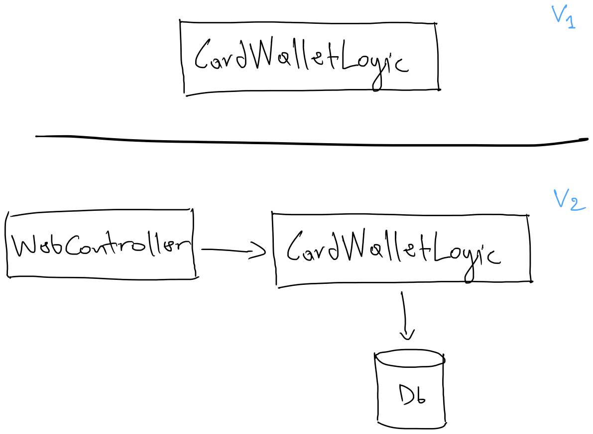
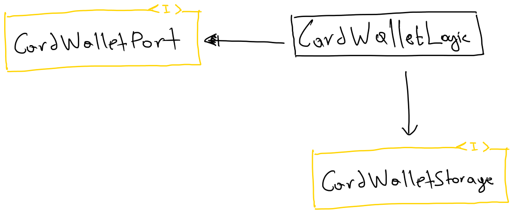
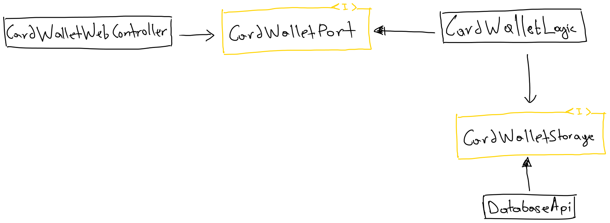
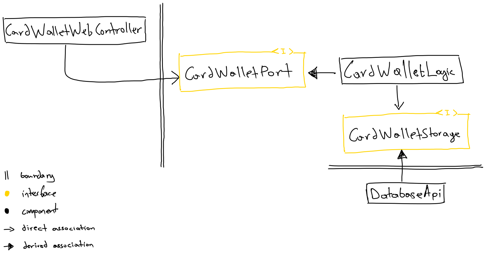

11 minutes
Ports and adapters pattern (aka Hexagonal architecture)
So it all began when I moved to another team within the same company. This colleague of mine, when I asked him how the team was like, etc, he said to me in the end, “we use the hexagonal architecture here, and you’ll see how much power it gives you.” Back then, I knew little about the SOLID principles, which is an acronym about best practices in OOP, heavily promoted by Uncle Bob. Not a long later, I found out how all of these so-called best practices were mentioned back in the 1970s.
The ports and adapters pattern is an architectural pattern invented by Alistair Cockburn; you can read all about it here 👈 It aims at creating loosely coupled application components, that can fix undesired dependencies, and domain logic leaking into the user interface and vice-versa.
Glossary
Hexagon is our core domain logic that should be isolated from the outside world. It should ideally contain no technology-specific dependencies; only very lightweight libraries that help with the complexity of the domain.
Ports are the interfaces defined, with their respective models, to separate the application components.
Adapters are the components that adapt the technology to the interface (port).
There are at two types of ports, as well as adapters.
- Driving ports: interfaces defining how the application is triggered.
- Driven ports: interfaces defining how the application communicates with the external world.
In the above fashion, the same goes with the driving/driven adapters
In a nutshell, we have our hexagon (domain logic) component which we want to isolate from the outside world via well-defined ports (interfaces), which are then implemented/used by adapter components.
Note that the above statement does not encompass all, so make sure you read the link to the original pattern if questions arise.
How it relates to SOLID
The ports and adapters pattern enforces one the SOLID principles due to its glossary. Dependency Inversion principle, which states
High-level modules should not depend on low-level modules; both should depend on abstractions. Abstractions should not depend on details; details should depend on abstractions.
One thing to clarify is that the dependency direction is not affected when applying the above principle; but, because of introducing an abstraction between them, we end up with two different dependencies.
- the high-level module depends on the abstraction.
- the low-level module depends on that same abstraction.
The dependency inversion principle follows naturally when we apply Open/closed and the Liskov substitution principles.
The Open/closed principle requires a software component to be open for extension and closed for modification. We can achieve that by introducing an abstraction for which we can derive different components. An interface itself is closed for modification, but we can extend it by providing new implementations.
Our implementations on the above principle should follow the Liskov substitution principle so that we can replace implementations of an abstraction without affecting the behaviour of the application. We can verify this principle when our tests exercise the behaviour and not implementation details.
Building an application
Let’s try and build an application to understand more about the pattern. The theme of the application will be a sort of card wallet software, which can:
- create a wallet
- list all wallets
- add a pass*
- debit a pass*
Pass* - a pass for this example is like those club cards in a super-market containing points.
Design phase
My initial attempt to draw out the application ended up quite ineffective, but we are here to learn, so I will include them in order to express my thoughts.

Now for “architectural design” V1, there is not really any architecture. Not only that but I stared at it confusingly, thinking of what will be my next steps, until I had reached to a point where I started adding things that became my V2.
I see this WebController that makes me think that there is some kind of web technology that is associated to the CardWalletLogic. Ok, maybe it uses the logic component. So this is probably an HTTP component that when called it uses the logic component, which is supposed to be our main application. Then we have another thing there, DB which is used by our CardWalletLogic, reading/writing data to complete the functionality.
V2 seems to be like an architectural design, but the thing that bothers me is that out of my confusion, I took technology decisions, only because of my inability to continue on designing the application. I also had thoughts on how would I test this out; I would need an HTTP server running, or I would mock it out; have a db up and running, or again mock it out. All in all, I felt I did not have a design that would help me start coding.
With a bit more focus on the ports and adapters pattern, I came up with the next version of the design.

Trying to make sense of the pattern, I drew two interfaces (ports in the glossary of the pattern)
CardWalletPort- driving port.CardWalletStorage- driven port.
One that defines how to communicate with the card wallet domain component,
and one that the domain uses to finish the functionality.
That leaves us with CardWalletLogic to be an implementation detail,
which is derived from the interface that defines the shape of
the domain logic component(the hexagon).
For those who do not know already, the filled arrow is a derived association (extends) and the empty arrow is a direct association (uses, has, etc.).
With this design, I felt much more confident. It also reminded me that regardless of what things are out of both interfaces (ports) I could safely - and I ought to - start implementing the behaviour of the card wallet domain first.
But I did not, yet!
My curiosity of my previous mistakes wanted me to try and visualize the design with both the abstractions and the technology choices I made in the last version.

It took a bit of time to draw out the correct associations, but I made it.
CardWalletWebController- driving adapter.DatabaseApi- driven adapter.
CardWalletWebController wraps the card wallet domain component
via the port, which means it has an instance of that interface,
and adapts HTTP-specific things to it. This is called an adapter
in the ports and adapters pattern, because it uses the
adapter software design pattern. Simple, right?
The other adapter is the DatabaseApi which derives from the
dependency port of card wallet domain component, adapting domain
logic into database-specific, acting as the depepdency port itself.
Another thing that I struggled to grasp is that the pattern talks about loosely coupled application components that stop undesired dependencies, and contamination of domain logic into the user interface and vice-versa. From my last version of the design, I could definitely see the “loosely coupling” being introduced because of the abstractions in place (ports). What I could not clearly depict, was the components. There was no clear separation of components, i.e. component modularity.

In the (hopefully) last design version, I attempted to clearly place the boundaries so that I could understand the dependencies. The design depicts three components:
- the card wallet domain component (hexagon)
- the HTTP adapter component (driving adapter)
- the database adapter component (driven adapter)
These three components should ideally be three separate modules with their own local concerns and dependencies. The design implies that whatever changes may happen to adapter modules will not affect the domain module (hexagon). This information is understood by the arrowed lines that, crossing the boundaries, they point to the same direction, to the most important part of the system. The domain logic. The high-level module, card wallet domain, does not directly depend on the low-level modules, the adapters, but on abstractions. Also, the low-level modules do not directly depend on the high-level module’s implementation details, but on the domain api.
Coding phase
Let us start by defining the port responsible to talk to our domain component.
We will focus on the wallet creation capability of the application; but we can pair it with the list all wallets functionality so that we can test the behaviour solely via the interface.
interface CardWalletPort {
fun createWallet(walletHolder: String): Wallet
fun list(): List<Wallet>
}
class CardWalletLogicTest {
private val cardWallet: CardWalletPort = TODO()
@Test
fun `can create a wallet`() {
val created = cardWallet.createWallet("John Doe")
val wallets = cardWallet.list()
assertThat(wallets, equalTo(listOf(created)))
}
}
If we remember the ports and adapters pattern, it defines:
- driving ports/adapters
- driven ports/adapters
The test we wrote in the above block of code, is essentially a driving adapter; it drives/triggers the domain logic component. It is “driving” because it targets the driving port, and “adapter” because it asserts the interface is behaving correctly, by running the framework’s rules engine upon results when delegating calls to the interface.
Now that we have defined the functionality in the port and a 💥 failing test ready to go; let us start implementing the hexagon.
class CardWalletLogic(
private val cardWalletStorage: CardWalletStorage): CardWalletPort {
override fun createWallet(walletHolder: String): Wallet =
WalletDomain.empty(UUID.randomUUID(), walletHolder)
.toDto()
.also { newWallet -> cardWalletStorage.save(newWallet) }
override fun list(): List<Wallet> = cardWalletStorage.getAll()
}
interface CardWalletStorage {
fun save(wallet: Wallet): Wallet
fun getAll(): List<Wallet>
}
For simplicity, internals of
CardWalletLogicare not included in the demo (there will be a link to the GitHub repository)
For creating a wallet, we have decided to persist the results into some storage; and so we define a driven port as it is an external concern.
toDto() function maps the domain object’s model to a data transfer model. This
is crucial, so we do not end up leaking domain knowledge out of the hexagon.
If we have a rich domain, and we choose to spread it across domain
objects, those models must not be part of the api (driving or driven ports),
rather they should be implementation details of the very hexagon.
That leaves us using simple data structures for entering or exiting the hexagon.
Of course, we now need to verify that the domain logic we have coded complies with the test we have written in the beginning. The test exercises the behaviour of the wallet creation functionality.
class CardWalletLogicTest {
private val cardWallet: CardWalletPort =
CardWalletLogic(InMemoryCardWalletStorage())
@Test
fun `can create a wallet`() {
val created = cardWallet.createWallet("John Doe")
val wallets = cardWallet.list()
assertThat(wallets, equalTo(listOf(created)))
}
}
Our test is green ✅ 🎉
Because at this point we are just focusing on the business domain, we have added an
in-memory storage implementation, InMemoryCardWalletStorage, for the driven port.
Now it is simply a matter of implementing all the rest of capabilities our domain application is supposed to do.
TDD intensifies…
fast-forward some time later…
class CardWalletLogicTest() {
private val cardWallet: CardWalletPort =
CardWalletLogic(InMemoryCardWalletStorage())
@Test
fun `can create a wallet`() {
val created = cardWallet.createWallet("John Doe")
val wallets = cardWallet.list()
assertThat(wallets, equalTo(listOf(created)))
}
@Test
fun `can add a pass to a wallet`() {
val wallet = cardWallet.createWallet("John Doe")
val newPass = PassBuilder().build()
val updatedWallet = cardWallet.addPass(wallet.id, newPass)
val foundPass = updatedWallet.passes.find { it.id == newPass.id }
assertThat(foundPass, equalTo(newPass))
}
@Test
fun `can get wallet by id`() {
val existed = cardWallet.createWallet("John Doe")
val found = cardWallet.getWalletById(existed.id)
assertThat(found, equalTo(existed))
}
@Test
fun `can debit pass points`() {
val pass = PassBuilder(points = 70).build()
val wallet = cardWallet.createWallet("John Doe")
.run { cardWallet.addPass(id, pass) }
val result = cardWallet.debitPass(wallet.id, pass.id, 50)
assertThat((result.get() as Pass).points, equalTo(20))
}
@Test
fun `can not debit more than balance`() {
val pass = PassBuilder(points = 50).build()
val wallet = cardWallet.createWallet("John Doe")
.run { cardWallet.addPass(id, pass) }
val result = cardWallet.debitPass(wallet.id, pass.id, 51)
val error = WalletErrorBuilder.ofPass(pass)
.withNotEnoughPointsIssue(debitAmount = 51, balance = 50)
.build()
assertThat(result.get() as WalletError, equalTo(error))
}
@Test
fun `can not debit pass when not found`() {
val wallet = cardWallet.createWallet("John Doe")
val pass = PassBuilder(points = 50).build()
val result = cardWallet.debitPass(wallet.id, pass.id, 50)
val error = WalletErrorBuilder.ofPass(pass)
.withPassNotFoundIssue()
.build()
assertThat(result.get() as WalletError, equalTo(error))
}
}
We have managed to build all the card wallet domain application functionalities, with a mixture of happy and unhappy path scenarios passing ✅ 🎉
Implementing the rest of the modules (driving and driven adapters) are not demonstrated since the essence of this demo is to focus on the domain first of all.
Testing strategy
Since the architectural pattern guides as in terms of putting the right abstractions in place; we can extend this even to our testing approach. We can define the test suite as another abstraction that implementors (driving/driven adapters in our case) can construct the system under test (SUT) in whatever ways, exercising that with the given adapting technologies the api still behaves as it supposed to be.
Let us have an example of the test suite extended like mentioned above.
abstract class CardWalletContract {
abstract val cardWallet: CardWalletPort
@Test
fun `can create a wallet`() {...}
@Test
fun `can add a pass to a wallet`() {...}
@Test
fun `can get wallet by id`() {...}
@Test
fun `can debit pass points`() {...}
@Test
fun `can not debit more than balance`() {...}
@Test
fun `can not debit pass when not found`() {...}
}
Now our previous logic test looks like this.
class CardWalletLogicTest: CardWalletContract() {
override val cardWallet: CardWalletPort =
CardWalletLogic(InMemoryCardWalletStorage())
}
The component responsible for the HTTP adapter would ideally need to comply with the contract test (the abstract test suite) we defined above.
class CardWalletHttpTest: CardWalletContract() {
private val httpServer: Http4kServer =
CardWalletWebController(InMemoryCardWallet())
.withFilter(ServerFilters.CatchLensFailure())
.asServer(SunHttp(0))
override val cardWallet: CardWalletPort =
CardWalletHttpClientFactory
.ofUri("http://localhost:${httpServer.port()}")
@BeforeEach
fun setUp() {
httpServer.start()
}
@AfterEach
fun tearDown() {
httpServer.stop()
}
}
The
InMemoryCardWalletis a quick way to construct the logic against an in-memory storage.
There is an idea behind making sure to test the behaviour of an api rather than its implementation details due to their nature of changing more frequently. The move value we add to that single test suite, the more important it becomes to make sure all adapters comply with it.
Here’s a link to project’s repository on Github.
Hope you enjoyed 😄